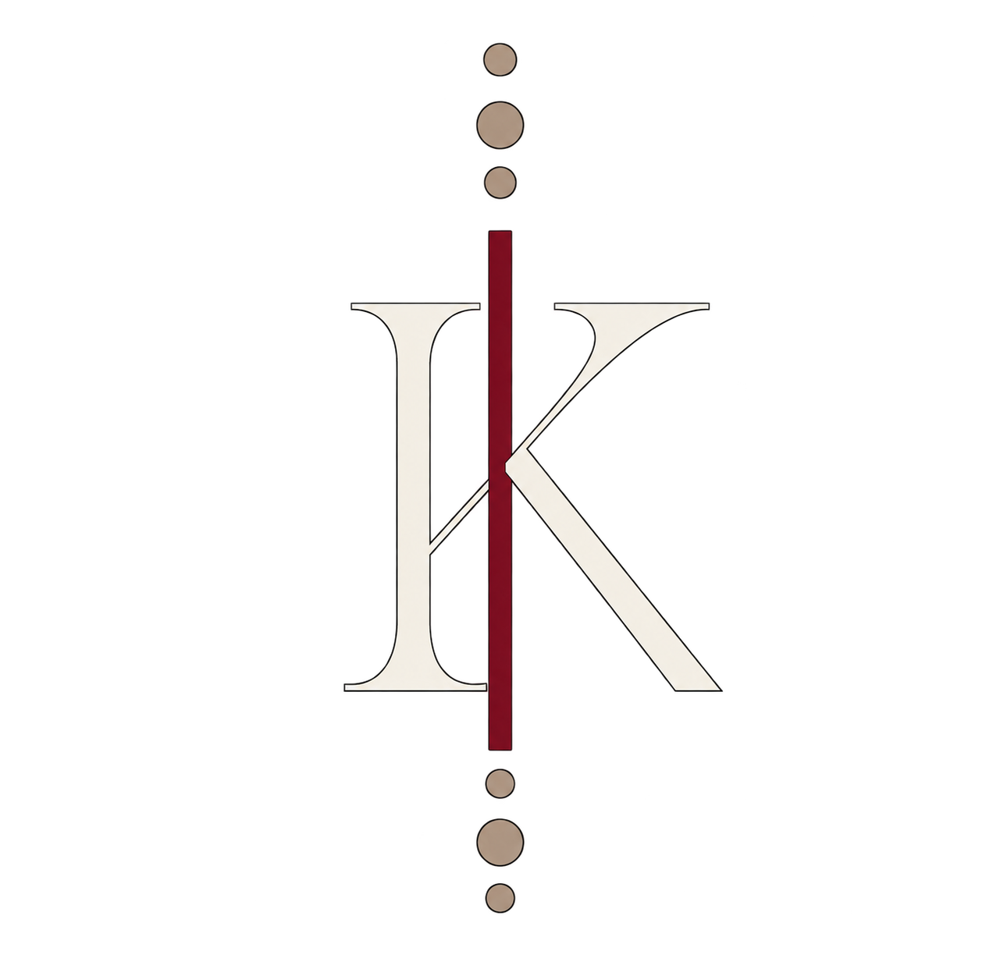
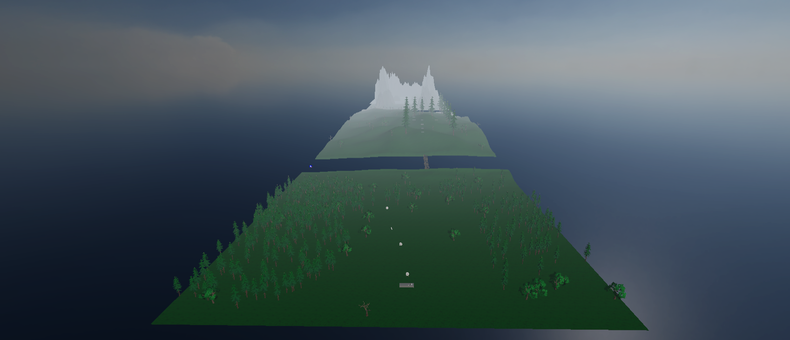

VR Archery Game
Bow & Arrow Trials is een VR-boogschietgame die ik zelfstandig heb ontwikkeld als schoolproject in Unity 6 voor de Meta Quest 3. In deze game moet de speler verschillende boogschietuitdagingen voltooien binnen drie unieke omgevingen: Open Field, Trees & Wind en bergen met water. Tijdens het ontwikkelen heb ik gewerkt aan verschillende VR-mechanics, waaronder het boog- en pijlsysteem, player locomotion, interactieve targets en haptic feedback.
